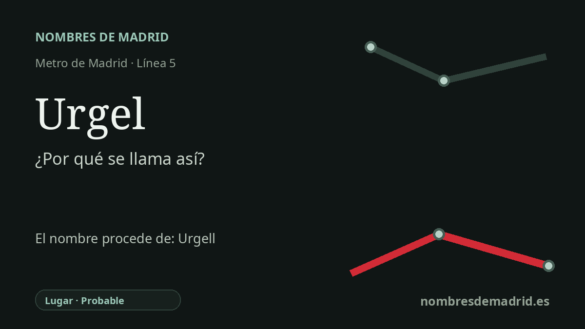

Publicado el · Investigación de Nombres de Madrid · Cómo verificamos cada origen · 6 fuentes consultadas
Respuesta rápida
La estación de Urgel toma su nombre de la calle de Urgel, en Carabanchel. El nombre de la calle remite a Urgell, topónimo catalán asociado al histórico Condado de Urgell y a lugares actuales de Lleida.
La historia del nombre
La estación de Urgel es, antes que nada, un nombre de Carabanchel. La parada pertenece a la línea 5 y se sitúa en el entorno de la calle de Urgel, que el Callejero histórico oficial registra como vía de Carabanchel desde el 14 de julio de 1893. Por tanto, el origen más directo del nombre de la estación es local y funcional: el Metro adoptó un nombre ya presente en el callejero de la zona.
Detrás de esa calle madrileña está Urgel, forma castellana del catalán Urgell. Urgell no es una referencia única y cerrada: puede evocar la comarca actual de l'Urgell, el territorio histórico del valle del Segre, la diócesis de Urgell, La Seu d'Urgell y, sobre todo, el Condado de Urgell medieval. El Consell Comarcal de l'Urgell vincula el nombre de la comarca actual con el antiguo condado pirenaico cuyos titulares llevaron el nombre hacia el sur durante la expansión medieval.
El Condado de Urgell aporta el contexto histórico más profundo del topónimo. La Gran Enciclopedia Catalana lo describe como una división territorial y administrativa de la Catalunya Vella creada bajo dominio franco tras la incorporación del Alt Urgell al ámbito carolingio a finales del siglo VIII. Después pasó por varias etapas dinásticas: Ermengol I inició la primera dinastía condal en 992, y los condes posteriores consolidaron y ampliaron territorios en torno al Segre y otras zonas vecinas.
La historia de Jaime II 'el Dissortat' que aparece en la redacción actual pertenece a esa historia condal, pero va más allá de lo que puede probarse para la estación en sí. Jaime II, último representante de la última dinastía condal, perdió la pugna política derivada de la crisis sucesoria de la Corona de Aragón; en 1413 Fernando I lo desposeyó y el condado quedó incorporado al patrimonio de la Corona. Es un contexto pertinente para Urgell, pero no una prueba directa de la intención con que Madrid rotuló la calle.
Por eso la confianza debe ser probable, no plenamente verificada. Están bien documentados el nombre de la estación, la calle madrileña y el topónimo histórico Urgell; lo que falta es un expediente municipal que precise qué quiso conmemorar exactamente el nombre de la calle. Una formulación prudente para el público sería: llamada por la calle de Urgel, que remite a Urgell, topónimo histórico catalán conocido especialmente por el Condado de Urgell.